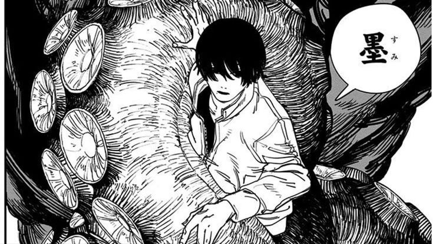

Web Development
HTML, CSS, JavaScript dan pengembangan website responsif.
Selamat datang di portfolio pribadi saya. Saya adalah mahasiswa Teknik Informatika yang memiliki ketertarikan pada teknologi, pemrograman, dan pengembangan aplikasi.

Saya merupakan mahasiswa Teknik Informatika di Universitas Gunadarma yang memiliki ketertarikan terhadap dunia teknologi dan pemrograman.
Selama menjalani perkuliahan, saya mempelajari berbagai bidang dalam teknologi informasi seperti pemrograman, pengembangan aplikasi, basis data, serta pengembangan website.
Saya senang mempelajari hal-hal baru dan terus mengembangkan kemampuan dalam bidang teknologi. Portfolio ini dibuat sebagai tempat untuk menampilkan beberapa kemampuan dan project yang telah saya kerjakan.
Beberapa bidang yang saya pelajari
HTML, CSS, JavaScript dan pengembangan website responsif.
Java, C, Python, dan bahasa pemrograman lainnya.
MySQL dan pengelolaan database untuk aplikasi.
Riwayat pendidikan saya
S1 Informatika
Fokus studi pada pengembangan perangkat lunak, algoritma, dan manajemen data. Memperdalam pemahaman teori komputasi sekaligus implementasi praktis dalam pembuatan sistem perangkat lunak yang tangguh.
Beberapa project yang pernah saya kerjakan
Aplikasi kasir untuk mengelola daftar makanan, transaksi, pembayaran, dan kembalian.
Website portfolio pribadi yang dibuat menggunakan HTML dan CSS dengan desain responsif.
Aplikasi untuk mencatat, mengelola, dan menyelesaikan daftar tugas.
Jangan ragu untuk menghubungi saya